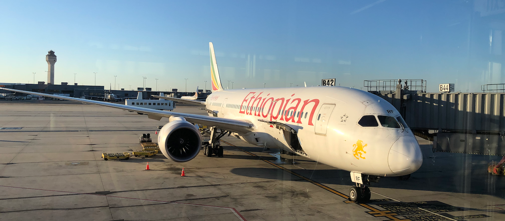

Live → Blog
December 5, 2021

A week ago I touched down in Washington, D.C. on the very last flight I could take into the US before a newly announced travel ban for non-citizens to enter the US directly from Southern Africa took effect. I had visited Botswana for the first time in over two years because of the pandemic. Pre-pandemic, I used to make two trips a year to Botswana. Most people on flight ET 500 had made last minute reservations or changes to their reservations to be on that flight to avoid being closed out. I was fortunate enough to already hold a booking for that same flight. What are the chances that I will hold a reservation on the most sought after flight from the region? This was just one of numerous improbable incidents from my recent trip home.
I landed in Gaborone on November 14th with an aggressive agenda that included driving over 1,600km (1,000 miles) over 2 days visiting loved ones in Lokgwabe and Ghanzi. To cover that much ground while having enough time to commune with loved ones meant part of the journey had to take place at night. I stepped on it like we do here in California, but forgot about the cows and wild animals on the highways in Botswana. I did not see the cow until it was right in front of me. Fortunately, the lane for incoming traffic was clear and I remembered a thing or two from The Art of Racing in the Rain. After quickly but tactfully maneuvering the car to the other lane at 140km/h (about 90mph), I smiled. If the other lane was not open the ending would have been tragically different. The smile was in gratitude that I did not kill myself or my sister and my niece — who were my travel companions — on my second day back in the country. The last car crash I was involved in — as a passenger — was also a day after landing in Botswana a few years back.
The rest of the trip went by without incident. I went to Lokgwabe and Ghanzi, seeing loved ones and going to check on livestock at the cattle post (think ranch, but the grazing land is collectively owned). Upon my return to the Gaborone - Kanye area, I got another reminder of how lucky I am. My family and friends threw me a "surprise" graduation party. I have never doubted that I have a loving community, but it filled my heart with joy to see how loved ones from my different worlds in Botswana came together to coordinate such a great event. I have always believed that the apparent success in my path is our collective success because it demonstrates what we can achieve together. So while they planned the event to celebrate me, it was in fact all of us celebrating ourselves and what we accomplished. Even as I am enjoying my life in the diaspora, I am anchored by this love. How much luckier could I be? (Thank you to everyone who was involved in organizing this event, even those who were not able to make it.)
After the party I had to drive my mother and my sister's family back to their home in Gathwane. But first we had to make a stop on the way to pick up a kid — as in baby goat — and some chickens that I was gifted with at the graduation party. I received numerous invaluable gifts at my party including a cow. Feeling fatigued from all the driving, I asked my brother-in-law to drive my car and rode in another car with my brother. The front tyre on my car blew while we were on the highway leaving Kanye. Because my brother-in-law drives relatively slower than I, he was able to bring the car to a stop safely. What are the odds that the faster driving me would surrender the car shortly before the tyre gives? Thankfully everyone was unharmed and we successfully changed the wheel and were on our way soon after.
My brother and I reached the farm from where we were picking the goat around dusk. As I picked up the kid, I forgot there was a short roof right above me. I stood up straight but bumped the back of my head on the iron sheet that was used as part of the roof. I don't know if my head bounced off the roof or I was trying to go down to avoid further collision, but at that point my head collided with the head of the little goat as it was trying to escape from my arms. Its sharp horn cut my eyebrow, barely a millimeter above where the bone began. Blood oozed out of the cut and I was thankful my thoughtful babe had encouraged me to always have some Kleenex when I traveled. I used it to soak up the blood. If the horn had cut a millimeter below, I would have lost my left eye. Whatever divine anointing covers me was strong that day.
Then a few days before my return to California, the omicron COVID-19 variant surfaced in Botswana and South Africa. Within a day, Europe closed its borders to non-citizen travelers from Southern Africa. I was worried the US would introduce a similar ban. Thankfully for me, the US was late in announcing their travel ban and they gave some lead time before they started enforcing it. My life is currently in California, so being locked out would have been tragic. I think it is interesting that the ban started the day after I arrived. But even more interesting is the fact that originally my trip was supposed to end on December 4th, but for a combination of factors I changed it to end on November 27th prior to leaving the US. How lucky am I? The Probabilist in me is intrigued by the perfect coincidences of scary situations and their associated fortunate outcomes. How can I not feel blessed and divinely protected?
← Return to Blog